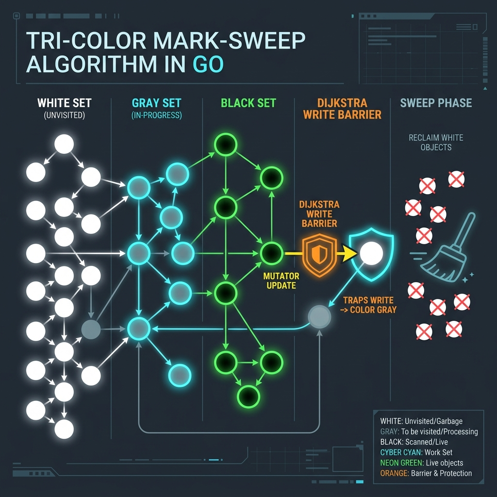
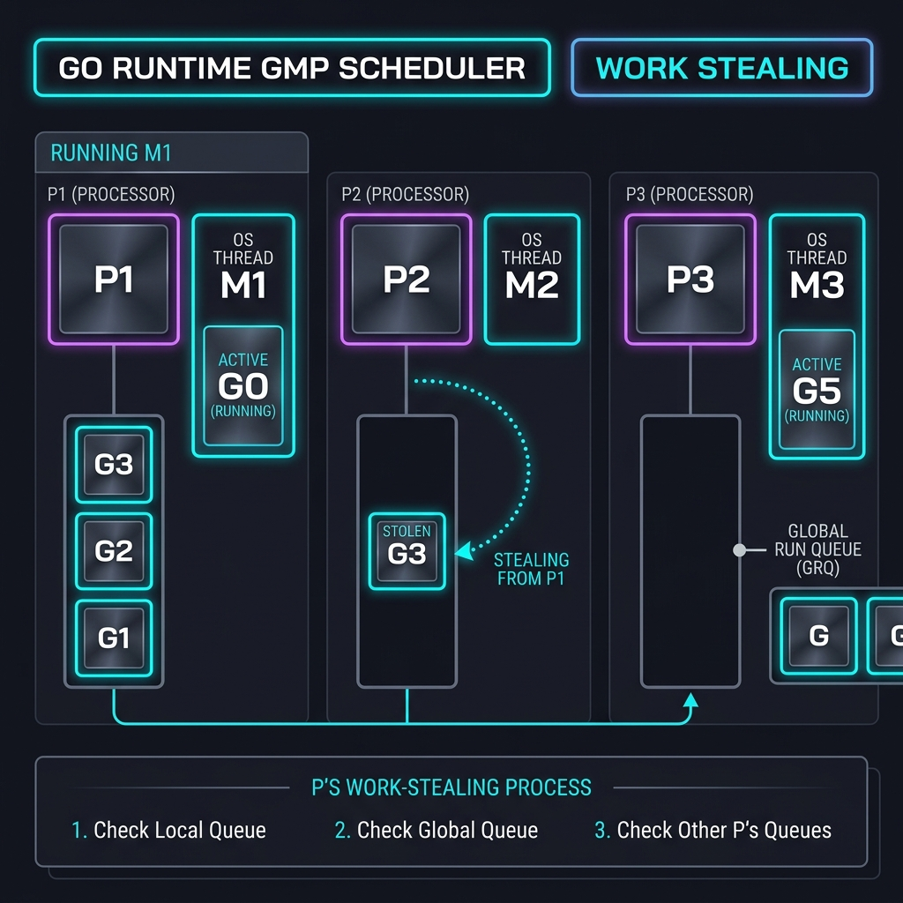
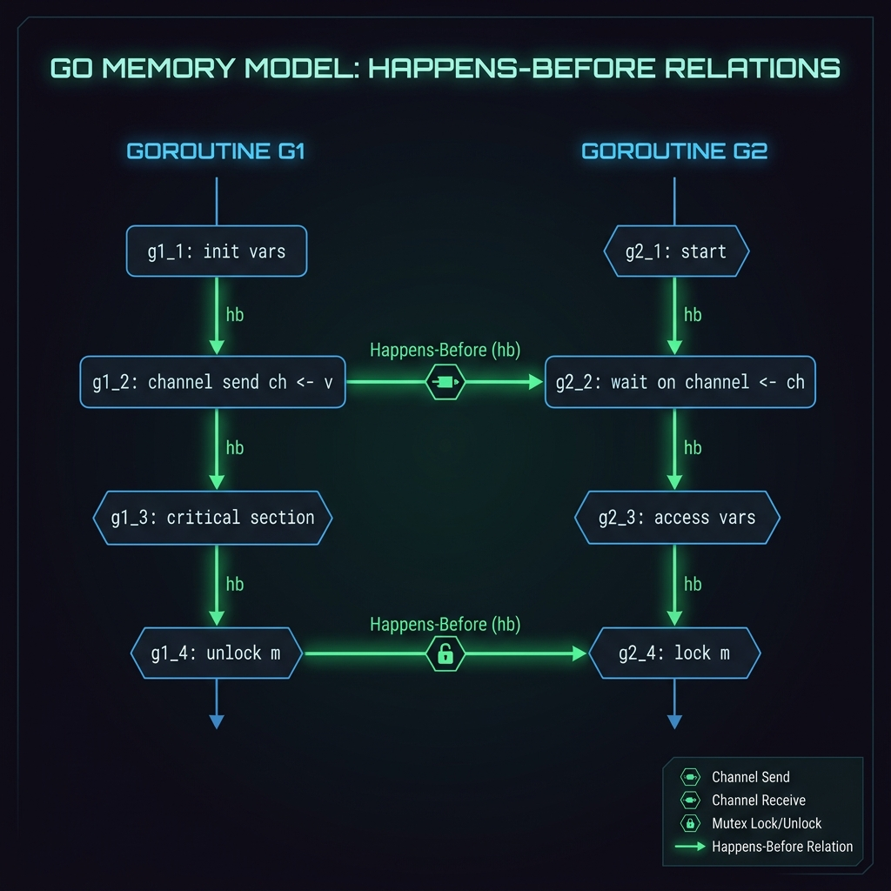
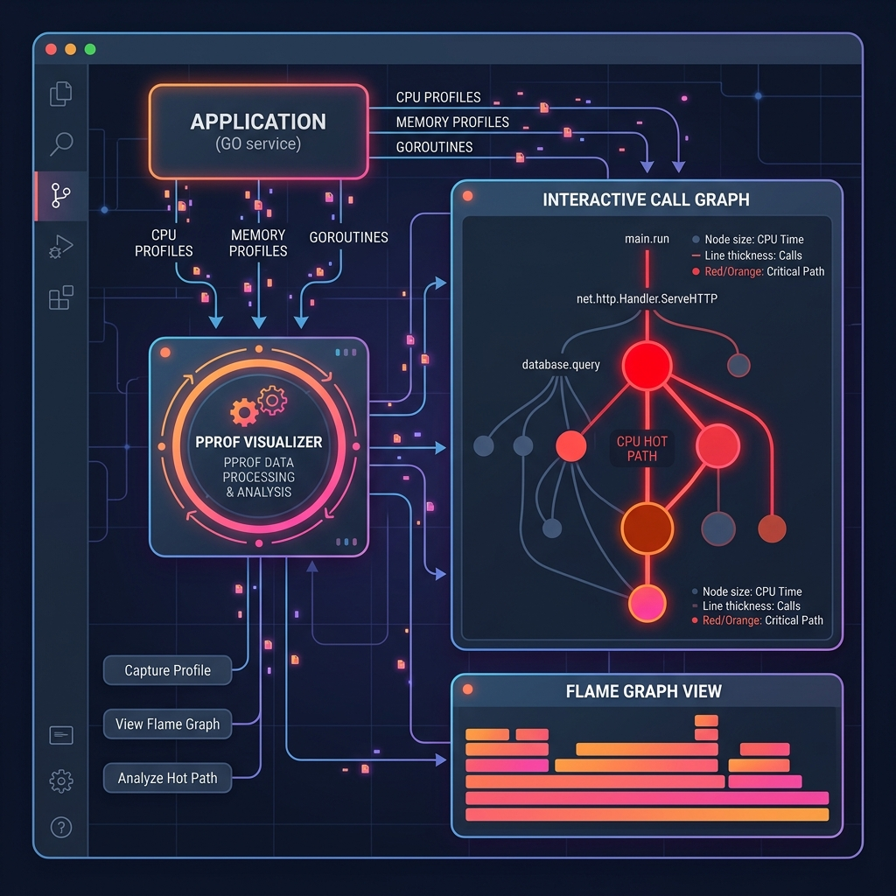
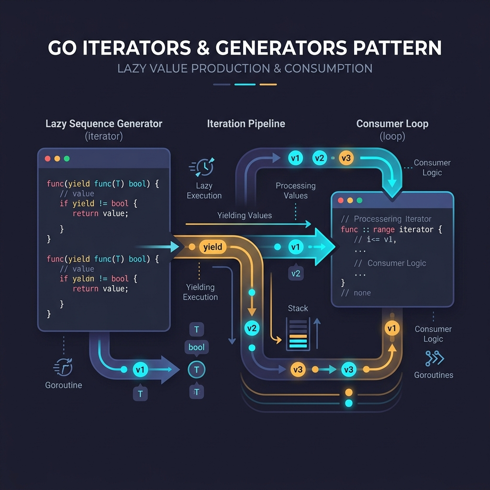
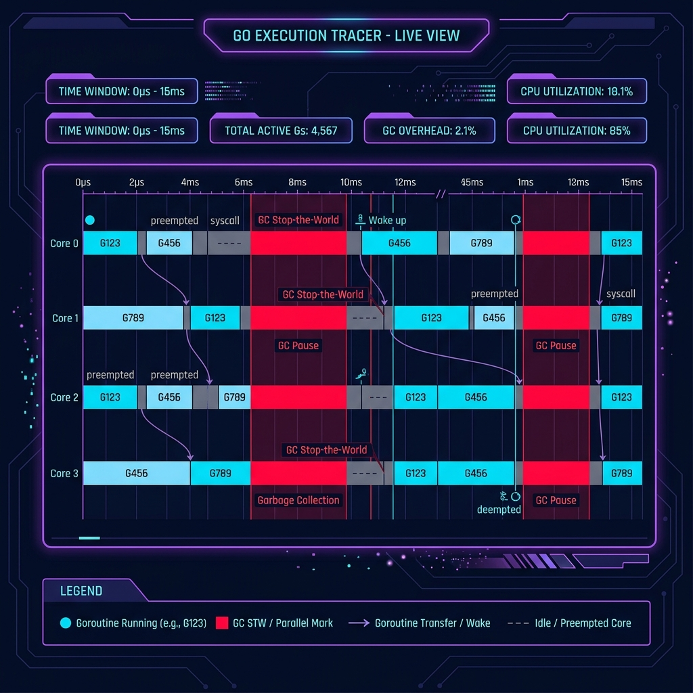
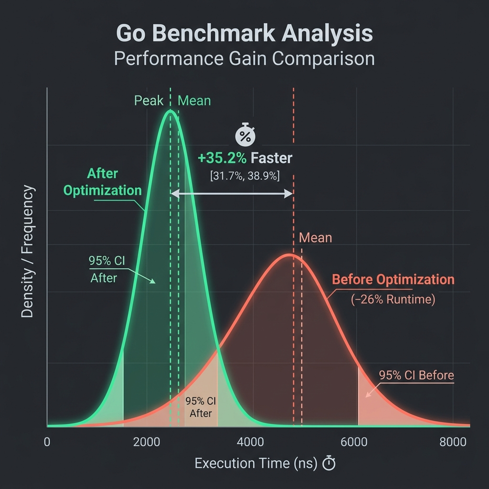
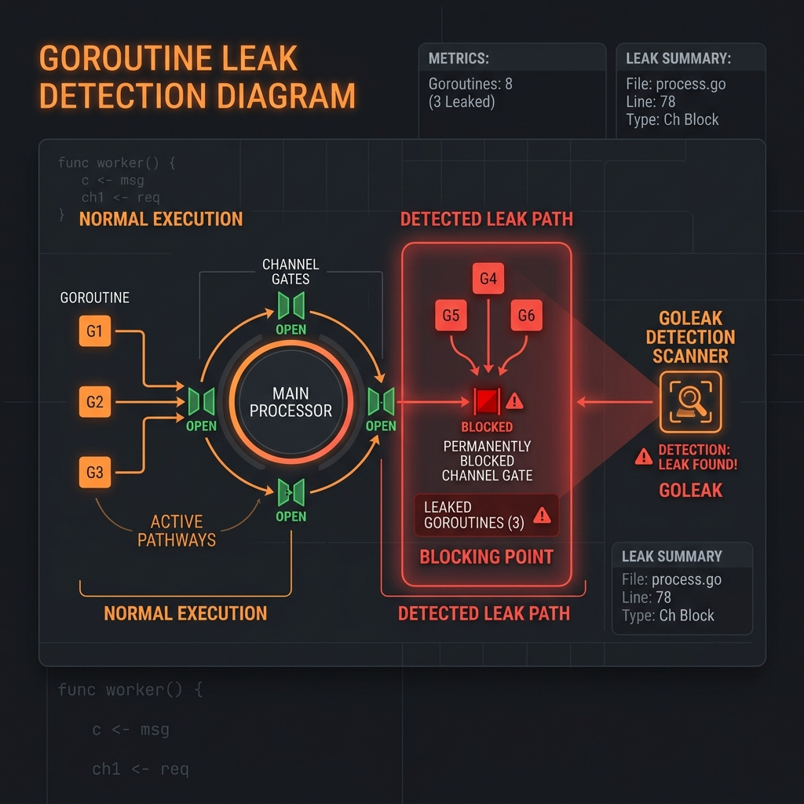

Tài liệu này đi sâu vào 9 chủ đề nâng cao nhất của Go: từ cách Garbage Collector hoạt động bên trong, GMP scheduler model, Memory Model với happens-before guarantees, các tính năng mới trong Go 1.24, đến các kỹ thuật profiling và debugging hiệu năng production. Mỗi chủ đề có code samples cụ thể, diagram minh họa, và best practices từ thực tế.
Tri-color mark-sweep concurrent, GOGC tuning, GC pause analysis.
Goroutine/Machine/Processor model, work stealing, preemption.
Happens-before, data races, sync primitives đúng cách.
Generic type aliases, weak pointers, finalizer cải tiến, tool directives.
CPU, heap, goroutine, mutex, block profiling với web UI.
iter.Seq pattern, lazy evaluation, pipeline với range-over-func.
go tool trace, goroutine timeline, GC events, network blocking.
Sub-benchmarks, benchstat statistical analysis, alloc reporting.
goleak, runtime inspection, context cancellation patterns.
Go sử dụng non-generational, non-compacting, concurrent tri-color mark-sweep GC. Từ Go 1.5+, GC chạy đồng thời với goroutines của ứng dụng — không phải stop-the-world hoàn toàn. GC chỉ dừng thế giới trong 2 giai đoạn ngắn: STW Mark Setup và STW Mark Termination.
GC trigger khi heap size đạt GOGC% của live heap trước đó (mặc định 100% — tức là heap tăng gấp đôi). Từ Go 1.19, có thêm GOMEMLIMIT cho phép set hard limit tổng bộ nhớ.
Tri-color Algorithm: Ba màu, ba trạng thái

Write Barrier — Bảo đảm invariant trong concurrent GC
Khi goroutine ghi *slot = ptr:
→ Shade *slot (giá trị cũ) thành gray
→ Shade ptr (giá trị mới) thành gray
✓ Đảm bảo: không có black object nào trỏ đến white object mà không qua gray
GOGC=100 (default): GC khi heap tăng 100%
GOGC=off: tắt GC hoàn toàn
GOGC=200: GC ít hơn, heap lớn hơn
GOMEMLIMIT=512MiB: hard limit — GC tích cực hơn khi gần limit (Go 1.19+)
HTTP server xử lý 50,000 req/s. Mỗi request allocate một []byte buffer 4KB để đọc body, sau đó GC. Với throughput cao như vậy, GC phải chạy liên tục để thu dọn short-lived allocations, gây CPU spike và latency tail. GOGC default 100 không đủ để giảm frequency.
package main import ( "net/http" "sync" "runtime/debug" "time" ) // Pool tái sử dụng buffer 4KB thay vì allocate mới mỗi request var bufPool = &sync.Pool{ New: func() any { buf := make([]byte, 4096) return &buf // trả về pointer để tránh interface boxing copy }, } func handleRequest(w http.ResponseWriter, r *http.Request) { // Lấy buffer từ pool — KHÔNG allocate heap bufPtr := bufPool.Get().(*[]byte) buf := *bufPtr defer func() { // Clear sensitive data trước khi trả lại pool for i := range buf { buf[i] = 0 } *bufPtr = buf[:4096] // reset len về full capacity bufPool.Put(bufPtr) }() n, _ := r.Body.Read(buf) // xử lý buf[:n] _ = n } // SetGCPercent cho latency-sensitive services func configureGC() { // Giảm GC frequency: chấp nhận heap lớn hơn đổi lấy ít pause hơn debug.SetGCPercent(200) // Hard limit: GC sẽ tích cực hơn khi gần limit thay vì OOM debug.SetMemoryLimit(512 * 1024 * 1024) // 512 MiB // Manual GC khi idle (ví dụ: sau một batch job) go func() { ticker := time.NewTicker(30 * time.Second) for range ticker.C { runtime.GC() // force GC khi idle } }() } // ReadStats đọc GC stats để monitor func printGCStats() { var stats debug.GCStats debug.ReadGCStats(&stats) // stats.NumGC: tổng số GC runs // stats.PauseTotal: tổng thời gian STW // stats.Pause: slice của từng pause duration _ = stats }
sync.Pool phù hợp nhất cho short-lived objects cùng kích thước, được tạo và hủy nhanh. Pool được reset khi GC chạy — không dùng Pool để lưu state quan trọng. QUAN TRỌNG: Store pointer (&buf) trong Pool, không phải slice header, để tránh escape to heap qua interface. Kết hợp GOMEMLIMIT thay thế hoàn toàn GOGC trong Go 1.19+ để tránh OOM trong môi trường container.
Function hot path allocate struct nhỏ và truyền pointer ra ngoài — Go escape analysis buộc phải đưa lên heap, tạo GC pressure. Cần hiểu khi nào allocation "escapes to heap" và cách tránh.
package main // Chạy: go build -gcflags="-m -m" để xem escape analysis output type Point struct { X, Y float64 } // ❌ ESCAPES to heap: pointer trả về ngoài function scope func newPointHeap(x, y float64) *Point { p := &Point{X: x, Y: y} // → "p escapes to heap" return p } // ✅ STAYS on stack: trả về value, không phải pointer func newPointStack(x, y float64) Point { return Point{X: x, Y: y} // stack allocated } // ❌ Interface boxing gây escape func badPattern(vals []int) { for _, v := range vals { fmt.Println(v) // v escapes: fmt.Println takes interface{} } } // ✅ Avoid interface boxing func goodPattern(vals []int) { for _, v := range vals { fmt.Printf("%d\n", v) // v: int không escape } } // ❌ Slice grow gây realloc + copy func withoutPrealloc(n int) []int { var result []int for i := 0; i < n; i++ { result = append(result, i) // nhiều realloc } return result } // ✅ Pre-allocate với known capacity func withPrealloc(n int) []int { result := make([]int, 0, n) // 1 allocation, no realloc for i := 0; i < n; i++ { result = append(result, i) } return result } // ❌ Map với interface{} values: boxing + GC scan var badMap = make(map[string]interface{}) // ✅ Typed map: no boxing, GC scan faster var goodMap = make(map[string]int64)
Escape analysis: go build -gcflags="-m" hiển thị allocation decisions. -m -m cho thêm chi tiết về lý do escape. Các nguyên nhân phổ biến gây escape: return pointer to local var, store vào interface, store vào global var, closure capture, send qua channel. Không phải lúc nào cũng tốt khi tránh escape — stack size per goroutine có limit và sẽ grow/shrink có overhead. Với large structs (>~100 bytes), heap có thể hiệu quả hơn.
Go scheduler là M:N scheduler — multiplexes M goroutines lên N OS threads. Ba thành phần: G (Goroutine) — đơn vị thực thi lightweight (~2KB stack, grow dynamically); M (Machine) — OS thread thực sự; P (Processor) — logical processor, queue goroutines và cung cấp ngữ cảnh thực thi cho M. Số P = GOMAXPROCS (default = số CPU cores).

Goroutine States
| State | Mô tả | Khi nào |
|---|---|---|
Grunnable | Đang chờ được lên P | Vừa tạo hoặc unblocked |
Grunning | Đang chạy trên M/P | Được scheduler chọn |
Gwaiting | Bị block, không trên run queue | chan recv/send, sync.Mutex, select, time.Sleep |
Gdead | Đã kết thúc | Function return, panic, runtime.Goexit |
Gcopystack | Stack đang được copy/grow | Stack overflow detection |
Một image processing service cần chạy song song nhiều task CPU-intensive. Developer tạo 10,000 goroutines cho 10,000 images — thực ra làm chậm hơn vì context switching overhead. Cần tìm số goroutine tối ưu cho CPU-bound workload.
package main import ( "runtime" "sync" "golang.org/x/sys/cpu" ) type WorkerPool[T, R any] struct { workers int jobs chan T results chan R } // CPU-bound: workers = GOMAXPROCS (không hơn) // I/O-bound: workers có thể 10x-100x GOMAXPROCS func NewWorkerPool[T, R any](fn func(T) R) *WorkerPool[T, R] { numCPU := runtime.GOMAXPROCS(0) // đọc giá trị hiện tại // Với CPU-bound: workers = numCPU để tránh context switch overhead // Để lại 1 CPU cho GC và runtime nếu latency-sensitive workers := numCPU if workers > 1 { workers-- } pool := &WorkerPool[T, R]{ workers: workers, jobs: make(chan T, workers*2), // buffer = 2x workers results: make(chan R, workers*2), } var wg sync.WaitGroup for i := 0; i < workers; i++ { wg.Add(1) go func() { defer wg.Done() for job := range pool.jobs { pool.results <- fn(job) } }() } go func() { wg.Wait() close(pool.results) }() return pool } // runtime/pprof để kiểm tra scheduler latency import "runtime/trace" func diagnoseScheduler() { // Xem scheduler events trong trace: // go tool trace trace.out → "Goroutine analysis" // Look for: scheduler latency, goroutines in "runnable" state lâu // GODEBUG=schedtrace=1000: print scheduler stats mỗi 1000ms // GOMAXPROCS=N để pin process lên N CPUs // Check CPU cache effects: group related data type CacheLinePadded struct { Value int64 _ [56]byte // pad to 64-byte cache line } // Tránh false sharing: mỗi goroutine có counter riêng trên cache line riêng counters := make([]CacheLinePadded, runtime.GOMAXPROCS(0)) _ = counters }
CPU-bound tasks: workers = GOMAXPROCS. Thêm goroutine không giúp ích vì M sẽ context switch trên cùng N CPU cores. I/O-bound tasks: goroutines nhiều hơn OK vì khi I/O block, G park và CPU space free cho G khác. False sharing: khi nhiều goroutines ghi vào các trường gần nhau trong struct, CPU phải sync cache lines giữa cores — pad struct đến 64 bytes để tránh. GODEBUG=asyncpreemptoff=1: tắt asynchronous preemption (Go 1.14+) nếu cần debug scheduler behavior.
Go Memory Model (được updated 2022) định nghĩa điều kiện để read của một goroutine đọc đúng value write bởi goroutine khác. Nguyên tắc cốt lõi: nếu không có synchronization rõ ràng, compiler và CPU có thể reorder instructions — behavior là undefined. Go khuyến cáo: "If you must read a variable written by another goroutine, use a synchronization mechanism."
Happens-before (HB): Event A happens-before Event B nếu có chain of synchronization events kết nối A và B. Nếu write W HB read R, R guaranteed đọc value của W.
Happens-Before Guarantees trong Go
| Synchronization Event | Happens-Before Guarantee |
|---|---|
go statement | go statement HB start của goroutine mới |
channel send | Send HB completion của receive (unbuffered); Nth send HB (N-C)th receive (buffered C) |
sync.Mutex Lock/Unlock | Nth Unlock HB (N+1)th Lock của cùng mutex |
sync.Once | f() trong Do HB return từ bất kỳ Do call nào |
sync/atomic | Store HB Load nếu observe giá trị được store |
sync.WaitGroup | Done HB return từ Wait (khi counter = 0) |

Metrics collector cần đếm requests từ hàng nghìn goroutines đồng thời. Dùng mutex sẽ gây contention. Cần lock-free counter. Đồng thời cần lazy initialization của expensive resource chỉ một lần.
package main import ( "sync" "sync/atomic" ) // ── Lock-free counter với atomic ──────────────────────────────────────── type Counter struct { value atomic.Int64 // Go 1.19+: typed atomic (alignment guaranteed) } func (c *Counter) Inc() { c.value.Add(1) } func (c *Counter) Add(n int64) { c.value.Add(n) } func (c *Counter) Load() int64 { return c.value.Load() } func (c *Counter) Reset() { c.value.Store(0) } // ── Sharded counter: giảm cache contention với nhiều CPU ──────────────── type ShardedCounter struct { shards [64]struct { atomic.Int64 _ [56]byte // pad đến 64 bytes (cache line size) } } func (c *ShardedCounter) Inc(goroutineID int) { c.shards[goroutineID%64].Int64.Add(1) } func (c *ShardedCounter) Total() int64 { var total int64 for i := range c.shards { total += c.shards[i].Int64.Load() } return total } // ── sync.Once: lazy initialization (thread-safe singleton) ────────────── type ExpensiveResource struct { data []byte } var ( resourceOnce sync.Once resource *ExpensiveResource ) func GetResource() *ExpensiveResource { resourceOnce.Do(func() { resource = &ExpensiveResource{data: loadData()} }) return resource // HB: Do's func() HB return từ any Do call // → mọi goroutine call GetResource() sau đều thấy initialized resource } // ── atomic.Pointer: lock-free pointer swap (Go 1.19+) ─────────────────── type Config struct { MaxConn int; Timeout int } type AtomicConfig struct { ptr atomic.Pointer[Config] } func (ac *AtomicConfig) Load() *Config { return ac.ptr.Load() } func (ac *AtomicConfig) Store(c *Config) { ac.ptr.Store(c) } func (ac *AtomicConfig) Swap(c *Config) *Config { return ac.ptr.Swap(c) // atomic: trả về old, lưu new } // Hot reload config không cần lock — zero downtime update: // newCfg := &Config{MaxConn: 200} // globalConfig.Store(newCfg) // atomic: readers thấy ngay
Go 1.19 typed atomics (atomic.Int64, atomic.Pointer) tốt hơn atomic.LoadInt64(&v): alignment được đảm bảo, API rõ ràng, không cần unsafe. Sharded counter: hiệu quả hơn khi có nhiều writers trên nhiều CPU cores (giảm false sharing). Luôn chạy race detector trong CI: go test -race ./... — overhead ~5-10x nhưng detect races statically. sync.Once vs init(): Once cho lazy initialization cần parameters hoặc error handling.
Go 1.24 mang lại nhiều tính năng quan trọng: generic type aliases (hoàn thiện generic ecosystem), weak pointers (cho cache use cases không giữ object alive), cải tiến finalizer với runtime.AddCleanup, tool directive trong go.mod, và nhiều stdlib improvements. Performance: GC 40% ít overhead hơn, map lookups nhanh hơn (~40%), CPU throughput improvements.
Trước Go 1.24, không thể tạo generic type alias (chỉ concrete type). Điều này hạn chế khả năng tạo type shortcuts cho generic types, gây verbose code khi làm việc với generic collections. Go 1.24 giải quyết điều này với full generic type alias support.
package main import ( "runtime" "weak" // Go 1.24: new package ) // ── 1. Generic Type Aliases (Go 1.24) ────────────────────────────────── // Trước 1.24: type Set[T] = map[T]struct{} → ERROR // Go 1.24: fully supported! type Set[T comparable] = map[T]struct{} type Pair[A, B any] = struct{ First A; Second B } type Result[T any] = struct{ Value T; Err error } func useGenericAlias() { s := make(Set[string]) s["hello"] = struct{}{} s["world"] = struct{}{} p := Pair[string, int]{First: "age", Second: 25} _ = p } // ── 2. weak.Pointer — Cache không giữ object alive ────────────────────── type Cache[K comparable, V any] struct { mu sync.RWMutex items map[K]weak.Pointer[V] } func (c *Cache[K, V]) Get(key K) (*V, bool) { c.mu.RLock() defer c.mu.RUnlock() wp, ok := c.items[key] if !ok { return nil, false } // weak.Pointer.Value() returns nil nếu object đã bị GC v := wp.Value() return v, v != nil } func (c *Cache[K, V]) Set(key K, val *V) { c.mu.Lock() defer c.mu.Unlock() c.items[key] = weak.Make(val) // val vẫn live miễn là caller giữ reference // Cache không giữ val alive → GC có thể thu hồi } // ── 3. runtime.AddCleanup (thay thế SetFinalizer) ────────────────────── type ManagedResource struct { fd int // file descriptor } func NewManagedResource(fd int) *ManagedResource { r := &ManagedResource{fd: fd} // AddCleanup: chạy khi r unreachable, KHÔNG block GC // Khác SetFinalizer: cleanup có thể chạy sớm hơn, multiple cleanups OK runtime.AddCleanup(r, func(fd int) { syscall.Close(fd) // cleanup nhận value, không phải pointer }, r.fd) return r } // ── 4. go.mod tool directive ───────────────────────────────────────────── // go.mod: // require golang.org/x/tools v0.x.x // tool ( // golang.org/x/tools/cmd/stringer // github.com/golangci/golangci-lint/cmd/golangci-lint // ) // // Usage: go tool stringer -type=Weekday // go tool golangci-lint run // → tools versioned cùng module, không cần separate Makefile
Generic type aliases: giúp viết type abbreviations cho complex generic types, cải thiện readability. weak.Pointer: perfect cho implementating caches mà không muốn cache giữ objects alive (memory-sensitive caches). Khác runtime.SetFinalizer: AddCleanup có thể có multiple cleanups per object, chạy concurrent. tool directive: giải quyết "tools.go hack" pattern trước đây — tools giờ là first-class citizen trong go.mod.
pprof là profiling tool tích hợp trong Go runtime. Có thể collect profiles theo nhiều cách: HTTP endpoint (net/http/pprof), programmatic API (runtime/pprof), hoặc test flag (go test -cpuprofile). Profile có thể analyze qua CLI (go tool pprof) hoặc web UI với flame graphs.

5 loại Profile quan trọng
| Profile Type | Thu thập gì | Dùng khi | Overhead |
|---|---|---|---|
cpu | Sampling stack traces mỗi 10ms | CPU usage cao, slow functions | ~5-10% |
heap | Allocation và live objects | Memory leak, GC pressure | Rất thấp |
goroutine | Stack của tất cả goroutines | Goroutine leak, deadlock | STW ngắn |
mutex | Contention trên sync.Mutex | Lock contention, slow mutex | ~5-10% |
block | Blocking trên chan/mutex/cond | Goroutines bị block lâu | Cao (~30%) |
package main import ( "context" "net/http" _ "net/http/pprof" // import side effect: register /debug/pprof/ handlers "runtime" "runtime/pprof" "os" "os/signal" "time" ) func startDebugServer() { // SECURITY: chỉ expose trên internal network, không ra public internet! go func() { // Available endpoints: // GET /debug/pprof/ — index // GET /debug/pprof/profile?seconds=30 — CPU profile 30s // GET /debug/pprof/heap — heap snapshot // GET /debug/pprof/goroutine — all goroutines // GET /debug/pprof/mutex — mutex contention // GET /debug/pprof/block — blocking events // GET /debug/pprof/trace?seconds=5 — execution trace // Enable mutex and block profiling (disabled by default) runtime.SetMutexProfileFraction(5) // 1/5 mutex events sampled runtime.SetBlockProfileRate(1000000) // events > 1ms sampled srv := &http.Server{ Addr: ":6060", ReadTimeout: 30 * time.Second, WriteTimeout: 120 * time.Second, // CPU profile cần thời gian } srv.ListenAndServe() }() } // Programmatic profile: dùng khi cần profile specific code path func profileCPU(duration time.Duration) error { f, err := os.Create("cpu.pprof") if err != nil { return err } defer f.Close() if err := pprof.StartCPUProfile(f); err != nil { return err } defer pprof.StopCPUProfile() time.Sleep(duration) // hoặc chạy workload cần profile return nil } // Signal-triggered profile: capture khi nhận SIGUSR1 func watchSignals(ctx context.Context) { ch := make(chan os.Signal, 1) signal.Notify(ch, syscall.SIGUSR1) defer signal.Stop(ch) for { select { case <-ctx.Done(): return case <-ch: profileCPU(30 * time.Second) // kill -USR1 <pid> → trigger 30s CPU profile } } } // Analysis commands: // go tool pprof http://localhost:6060/debug/pprof/profile?seconds=30 // go tool pprof -http=:8080 cpu.pprof → opens web UI with flame graph // go tool pprof -alloc_space http://localhost:6060/debug/pprof/heap
Production safety: pprof HTTP endpoint phải được protect (internal network only, hoặc behind auth middleware). Overhead của CPU profiling (~5-10%) là chấp nhận được trong production khi cần diagnose. Flame graph là cách đọc pprof hiệu quả nhất: trục X là CPU time, trục Y là call stack depth. Differential profile: pprof -diff_base=before.pprof after.pprof so sánh hai profiles — rất hữu ích khi optimize. Block profile overhead cao — chỉ enable khi investigate blocking issues.
Service bắt đầu với 100MB, sau 24h lên 2GB và OOM. Cần tìm root cause. Heap profile là tool đầu tiên cần dùng.
# 1. Capture heap profile lúc bình thường (baseline) curl -s http://localhost:6060/debug/pprof/heap > baseline.pprof # 2. Wait hoặc reproduce issue sleep 3600 # hoặc simulate load # 3. Capture heap profile khi memory cao curl -s http://localhost:6060/debug/pprof/heap > after.pprof # 4. Xem top allocators (inuse_space: memory currently held) go tool pprof -inuse_space after.pprof # (pprof) top 20 # → lists functions holding most memory # 5. Xem allocation path (alloc_space: total allocated, including freed) go tool pprof -alloc_space after.pprof # (pprof) top 20 # → nếu function xuất hiện nhiều ở alloc nhưng ít ở inuse → nhiều short-lived alloc # 6. Web UI với flame graph (tốt nhất cho visualization) go tool pprof -http=:8080 after.pprof # 7. Diff: so sánh để thấy delta go tool pprof -diff_base=baseline.pprof -http=:8080 after.pprof # → màu đỏ = tăng, màu xanh = giảm # 8. Tìm goroutine leaks (goroutines tăng theo thời gian) curl -s http://localhost:6060/debug/pprof/goroutine?debug=1 | head -50 # 9. allocs: real-time allocation rate (không phải live heap) curl -s "http://localhost:6060/debug/pprof/allocs" > allocs.pprof
package main // ── Common Memory Leak Patterns ──────────────────────────────────────── // ❌ Leak 1: goroutine block mãi mãi → heap không được GC func goroutineLeak() { ch := make(chan int) go func() { data := make([]byte, 1024*1024) // 1MB trapped <-ch // blocked forever nếu không ai gửi vào ch _ = data }() // ch không được close → goroutine leak + 1MB memory leak } // ✅ Fix: context + timeout func noLeak(ctx context.Context) { ch := make(chan int, 1) go func() { data := make([]byte, 1024*1024) select { case <-ch: case <-ctx.Done(): // always exit when context cancelled } _ = data }() } // ❌ Leak 2: string converter giữ underlying array lớn func stringLeak(largeData []byte) string { return string(largeData[10:20]) // safe, Go copies } // ❌ Leak 3: sub-slice giữ large underlying array func sliceLeak(large []byte) []byte { return large[100:110] // sub-slice → large vẫn không bị GC! } // ✅ Fix: copy needed data func noSliceLeak(large []byte) []byte { result := make([]byte, 10) copy(result, large[100:110]) return result // large có thể bị GC } // ❌ Leak 4: time.Ticker không được Stop func tickerLeak() { for { ticker := time.NewTicker(time.Second) // goroutine bên trong ticker! <-ticker.C // ticker.Stop() không bao giờ được gọi → goroutine leak } } // ✅ Fix func noTickerLeak(ctx context.Context) { ticker := time.NewTicker(time.Second) defer ticker.Stop() for { select { case <-ticker.C: // do work case <-ctx.Done(): return } } }
Workflow chuẩn: baseline → load → capture → diff. Dùng -inuse_space cho memory đang bị giữ; -alloc_space cho total allocations (bao gồm đã freed). Sub-slice leak là một trong những bug tinh vi nhất — slice nhỏ giữ underlying array lớn alive. Rule: nếu giữ small portion của large slice, hãy copy. strings.Builder vs bytes.Buffer: Builder zero-copy, không escape; Buffer có thể grow nhiều lần. Prefer Builder cho string building trong hot paths.
Go 1.22 giới thiệu range-over-func — cho phép dùng for range với function có signature func(yield func(K, V) bool). Package iter (Go 1.23) chuẩn hóa với iter.Seq[V] và iter.Seq2[K, V]. Generators cho phép lazy evaluation — chỉ compute khi cần — và infinite sequences mà không tốn memory.

Query database trả về 1 triệu records. Nếu load tất cả vào slice trước rồi process, cần hàng GB memory. Cần streaming pipeline: đọc từng batch nhỏ, filter, transform, và consume mà không cần load toàn bộ vào memory.
package main import ( "context" "database/sql" "iter" // Go 1.23 ) // iter.Seq[V] = func(yield func(V) bool) // yield returns false → generator must stop (break from range) // ── Source: database rows as lazy sequence ────────────────────────────── func QueryRows[T any]( ctx context.Context, db *sql.DB, query string, scan func(*sql.Rows) (T, error), ) iter.Seq2[T, error] { return func(yield func(T, error) bool) { rows, err := db.QueryContext(ctx, query) if err != nil { var zero T yield(zero, err) return } defer rows.Close() for rows.Next() { val, err := scan(rows) if !yield(val, err) { // yield trả false → consumer broke return } } if err := rows.Err(); err != nil { var zero T yield(zero, err) } } } // ── Filter combinator ──────────────────────────────────────────────────── func Filter[V any](seq iter.Seq[V], pred func(V) bool) iter.Seq[V] { return func(yield func(V) bool) { for v := range seq { if pred(v) && !yield(v) { return } } } } // ── Map combinator ─────────────────────────────────────────────────────── func Map[V, R any](seq iter.Seq[V], f func(V) R) iter.Seq[R] { return func(yield func(R) bool) { for v := range seq { if !yield(f(v)) { return } } } } // ── Take: first N elements ─────────────────────────────────────────────── func Take[V any](seq iter.Seq[V], n int) iter.Seq[V] { return func(yield func(V) bool) { count := 0 for v := range seq { if !yield(v) || count+1 >= n { return } count++ } } } // ── Batch: nhóm thành chunks ───────────────────────────────────────────── func Batch[V any](seq iter.Seq[V], size int) iter.Seq[[]V] { return func(yield func([]V) bool) { batch := make([]V, 0, size) for v := range seq { batch = append(batch, v) if len(batch) == size { if !yield(batch) { return } batch = batch[:0] // reuse backing array } } if len(batch) > 0 { yield(batch) } } } // ── Usage: streaming DB pipeline ───────────────────────────────────────── type User struct { ID int64; Email string; Active bool } func processUsers(ctx context.Context, db *sql.DB) error { // 1. Source: lazy DB query users := QueryRows(ctx, db, "SELECT id, email, active FROM users", func(r *sql.Rows) (User, error) { var u User return u, r.Scan(&u.ID, &u.Email, &u.Active) }) // 2. Pipeline: không allocate slice trung gian activeUsers := Filter(users, func(u User) bool { return u.Active }) emails := Map(activeUsers, func(u User) string { return u.Email }) batches := Batch(emails, 100) // nhóm 100 email mỗi batch // 3. Consume: range-over-func for batch := range batches { if err := sendEmailBatch(ctx, batch); err != nil { return err } } return nil // Memory: chỉ 1 batch (100 emails) trong memory tại một thời điểm! }
Generator pattern: không cần goroutine hay channel — chỉ là function composition. Hiệu quả hơn channel-based pipeline vì không có synchronization overhead. Break semantic: khi range break hoặc return, yield returns false → generator phải clean up và return. Đảm bảo resource cleanup (defer rows.Close()) vẫn được gọi. slices.Collect (Go 1.23): slices.Collect(seq) materializes iterator thành slice khi cần toàn bộ data.
pprof cho biết function nào dùng nhiều CPU/memory (aggregated over time). Execution tracer ghi lại timeline của mọi event: goroutine state changes, GC phases, network block, system calls — theo microsecond precision. Tracer tốt để diagnose: scheduler latency, GC impact, goroutine starvation, network I/O waiting.
Go 1.22 rework execution tracer hoàn toàn: regions thay thế spans, tasks hierarchy, và trace format mới hiệu quả hơn nhiều.

Service xử lý orders chậm hơn expected. pprof cho thấy không có hot function, nhưng latency P99 vẫn cao. Cần biết mỗi bước trong order pipeline tốn bao nhiêu thời gian và goroutine nào đang chờ gì.
package main import ( "context" "os" "runtime/trace" "time" ) // ── Setup: thu thập trace ──────────────────────────────────────────────── func collectTrace(duration time.Duration) { f, _ := os.Create("trace.out") defer f.Close() trace.Start(f) defer trace.Stop() time.Sleep(duration) // go tool trace trace.out → opens browser } // ── User tasks: trace business transactions ────────────────────────────── func processOrder(ctx context.Context, orderID string) error { // Task: group related events trong trace viewer ctx, task := trace.NewTask(ctx, "processOrder") defer task.End() trace.Logf(ctx, "order", "starting order %s", orderID) // Region: measure specific sub-operation trace.WithRegion(ctx, "validateOrder", func() { // validation logic — visible trong trace timeline time.Sleep(5 * time.Millisecond) }) var paymentResult string trace.WithRegion(ctx, "chargePayment", func() { // payment API call — nếu chậm sẽ thấy rõ trong trace paymentResult = callPaymentAPI(ctx) }) trace.WithRegion(ctx, "updateDatabase", func() { // DB write — có thể thấy lock contention writeToDatabase(ctx, orderID, paymentResult) }) trace.Logf(ctx, "order", "completed order %s", orderID) return nil } // ── Goroutine analysis từ trace ────────────────────────────────────────── // go tool trace trace.out // Tabs quan trọng: // // 1. "Goroutine analysis": xem tất cả goroutines, // thời gian spent trong: running, runnable, blocked(net), blocked(sync), sleep // → Goroutines blocked(sync) nhiều → lock contention // → Goroutines runnable lâu → scheduler latency // // 2. "Network blocking profile": // → Show thời gian goroutines chờ network I/O // // 3. "Sync blocking profile": // → Show mutex, channel blocking // // 4. "View trace" → timeline của tất cả P/G/M // → Zoom vào GC events để xem STW duration // ── Continuous trace với ring buffer (Go 1.22+) ────────────────────────── func continuousTrace(ctx context.Context) { // Go 1.22: trace.FlightRecorder — ring buffer của recent events // Khi detect anomaly, dump trace từ last N seconds fr := trace.NewFlightRecorder() fr.SetPeriod(10 * time.Second) // giữ 10s gần nhất fr.Start() defer fr.Stop() for { select { case <-ctx.Done(): return default: if detectHighLatency() { // Dump trace khi phát hiện anomaly f, _ := os.Create("incident.trace") fr.WriteTo(f) f.Close() } time.Sleep(time.Second) } } }
trace.WithRegion là cách tốt nhất để annotate business operations trong trace timeline — giúp correlate code với runtime behavior. FlightRecorder (Go 1.22): production-safe continuous tracing với fixed memory overhead — dump khi phát hiện vấn đề, không cần plan trước. Khi nào dùng trace vs pprof: trace khi cần biết "tại sao latency cao", "goroutine nào chờ gì", "GC pause ảnh hưởng thế nào"; pprof khi cần biết "function nào chậm nhất", "code path nào allocate nhiều nhất".
Benchmark trong Go dùng package testing.B. Để kết quả đáng tin cậy, cần tránh: compiler optimization (dead code elimination), benchmark noise, GC interference, và CPU frequency scaling. Dùng benchstat để so sánh thống kê giữa các versions thay vì chỉ nhìn số tuyệt đối.

package main import ( "testing" "math/rand" ) // ── Basic benchmark: nguyên tắc cơ bản ────────────────────────────────── func BenchmarkJsonMarshal(b *testing.B) { data := &MyStruct{Name: "test", Value: 42} b.ResetTimer() // exclude setup time b.ReportAllocs() // show allocations per op for i := 0; i < b.N; i++ { result, err := json.Marshal(data) if err != nil { b.Fatal(err) } _ = result // prevent dead code elimination } } // ── Prevent compiler optimization với sink ────────────────────────────── var globalSink interface{} // package-level var prevents optimization func BenchmarkWithSink(b *testing.B) { for i := 0; i < b.N; i++ { result := expensiveComputation(i) globalSink = result // MUST escape to prevent elimination } } // ── Sub-benchmarks: test nhiều inputs ───────────────────────────────── func BenchmarkSort(b *testing.B) { sizes := []int{10, 100, 1000, 10000, 100000} for _, size := range sizes { b.Run(fmt.Sprintf("size=%d", size), func(b *testing.B) { // Setup: tạo data NGOÀI loop data := make([]int, size) for i := range data { data[i] = rand.Intn(10000) } b.ResetTimer() for i := 0; i < b.N; i++ { // Copy để giữ data consistent mỗi iteration tmp := make([]int, size) copy(tmp, data) sort.Ints(tmp) } }) } } // ── Parallel benchmark ───────────────────────────────────────────────── func BenchmarkConcurrentMap(b *testing.B) { m := sync.Map{} b.RunParallel(func(pb *testing.PB) { i := 0 for pb.Next() { m.Store(i%1000, i) m.Load(i%1000) i++ } }) } // ── Custom metric với b.ReportMetric ──────────────────────────────────── func BenchmarkThroughput(b *testing.B) { totalBytes := 0 b.ResetTimer() for i := 0; i < b.N; i++ { data := generateData(1024) totalBytes += len(data) processData(data) } // Report custom metric b.ReportMetric(float64(totalBytes)/float64(b.N), "bytes/op") b.SetBytes(int64(totalBytes) / int64(b.N)) // MB/s calculation }
Benchmark flags quan trọng: -benchmem (allocs/op, B/op), -benchtime=5s (longer = more stable), -count=10 (multiple runs cho benchstat). -cpuprofile/-memprofile: profile trong benchmark run: go test -bench=BenchmarkFoo -cpuprofile=cpu.pprof. Pitfalls: đừng allocate trong benchmark setup, đừng forget ResetTimer sau setup, đừng bỏ qua -count khi so sánh. CPU frequency scaling: tắt frequency scaling (cpupower frequency-set -g performance) trên Linux để giảm noise.
Sau khi optimize một function, benchmark chạy một lần cho kết quả: before=1.2ms, after=0.9ms — 25% improvement. Nhưng kết quả này có đủ statistical significance không? Có thể là noise từ CPU throttling, GC, background processes. Cần phương pháp đánh giá đáng tin cậy.
# 1. Install benchstat (Go 1.23+: built into go toolchain) go install golang.org/x/perf/cmd/benchstat@latest # 2. Chạy benchmark trên code CŨ với -count=10 (10 iterations) git stash # hoặc checkout old branch go test -bench=BenchmarkSort -benchmem -count=10 ./... > old.txt # 3. Chạy benchmark trên code MỚI git stash pop # hoặc checkout new branch go test -bench=BenchmarkSort -benchmem -count=10 ./... > new.txt # 4. So sánh với benchstat benchstat old.txt new.txt # Output ví dụ: # goos: linux # goarch: amd64 # pkg: myapp/sort # │ old.txt │ new.txt │ # │ sec/op │ sec/op vs base │ # Sort/size=100 │ 1.23µs ± 3%│ 0.891µs ± 2% -27.56% (p=0.000)│ # Sort/size=1000 │ 14.5µs ± 2%│ 9.82µs ± 1% -32.28% (p=0.000)│ # Sort/size=10000 │ 185µs ± 1%│ 142µs ± 2% -23.24% (p=0.000)│ # # │ B/op │ B/op vs base │ # Sort/size=100 │ 480 ± 0% │ 160 ± 0% -66.67% (p=0.000) │ # # p=0.000 → statistically significant (p < 0.05 = significant) # ± 3% → noise level (thấp là tốt) # 5. Với metrics mới (Go 1.21 benchstat format) benchstat -col /size old.txt new.txt # pivot theo sub-benchmark # 6. Detect regression trong CI # Nếu p > 0.05 hoặc change dương (tăng thời gian) → fail CI benchstat old.txt new.txt | grep -E "\+[0-9]" && exit 1 || exit 0
// ── Benchmark with testscript for reproducibility ────────────────────── // testing.B.Loop() — Go 1.24 feature: cleaner loop without b.N func BenchmarkWithLoop(b *testing.B) { data := makeData(1000) for b.Loop() { // Go 1.24: b.Loop() replaces b.N pattern _ = process(data) } // b.Loop() handles: timer reset, N iterations, cleanup automatically } // ── Table-driven benchmark với generate ─────────────────────────────── func BenchmarkEncoding(b *testing.B) { type benchCase struct { name string encoder func([]byte) string input []byte } inputs := [][]byte{ make([]byte, 64), make([]byte, 1024), make([]byte, 65536), } for _, input := range inputs { rand.Read(input) // random data b.Run(fmt.Sprintf("hex/size=%d", len(input)), func(b *testing.B) { b.SetBytes(int64(len(input))) for b.Loop() { globalSink = hex.EncodeToString(input) } }) b.Run(fmt.Sprintf("base64/size=%d", len(input)), func(b *testing.B) { b.SetBytes(int64(len(input))) for b.Loop() { globalSink = base64.StdEncoding.EncodeToString(input) } }) } } // ── Avoid common benchmark mistakes ───────────────────────────────────── // ❌ WRONG: timer includes setup func BenchmarkWrong(b *testing.B) { for i := 0; i < b.N; i++ { data := makeData(1000) // setup INSIDE loop: measured! process(data) } } // ✅ CORRECT: setup outside, reset timer func BenchmarkCorrect(b *testing.B) { data := makeData(1000) // setup OUTSIDE b.ResetTimer() for i := 0; i < b.N; i++ { process(data) } }
benchstat p-value: p < 0.05 = statistically significant. p > 0.05 = có thể là noise, cần chạy thêm (-count=20). Noise sources: GC runs (dùng GOGC=off trong benchmark nếu test pure CPU), CPU throttling (cpupower), background processes, cache effects. Go 1.24 b.Loop(): thay thế pattern for i := 0; i < b.N; i++ — cleaner, handles timer và cleanup correctly. Benchmark in CI: lưu results và alert khi regression > 5% (p < 0.05). Dùng benchstat trong pre-merge checks.
Goroutine leak xảy ra khi goroutine được tạo nhưng không bao giờ kết thúc. Mỗi goroutine tốn ít nhất ~2KB stack (có thể grow đến GB). Không giống memory leak, goroutine leak còn giữ tất cả resources goroutine đang hold: connections, locks, channels. Với hàng nghìn goroutines bị leak, service sẽ chậm dần và eventually OOM.
Nguyên nhân phổ biến: goroutine block trên channel receive mà không ai send; goroutine chờ timer mà không bao giờ fire; goroutine trong infinite loop không có exit condition; goroutine block trên mutex mà holder bị panic.

Service gặp memory tăng dần sau mỗi request. Nghi ngờ goroutine leak nhưng không biết test có goroutine leak mà không monitor production. Cần automated testing và runtime detection.
package main import ( "context" "runtime" "testing" "time" "go.uber.org/goleak" ) // ── goleak: detect goroutine leaks in tests ───────────────────────────── func TestMain(m *testing.M) { // Kiểm tra leaked goroutines sau tất cả tests goleak.VerifyTestMain(m) // Nếu có leak → test fail với stack trace của leaked goroutines } func TestNoLeaks(t *testing.T) { // Kiểm tra leak per-test defer goleak.VerifyNone(t) ctx, cancel := context.WithTimeout(context.Background(), 5*time.Second) defer cancel() // Chạy code được test err := doSomeWork(ctx) if err != nil { t.Fatal(err) } // goleak.VerifyNone sẽ check sau defer cancel() } // Ignore specific goroutines (known third-party goroutines) func TestWithIgnore(t *testing.T) { defer goleak.VerifyNone(t, goleak.IgnoreTopFunction("database/sql.(*Tx).awaitDone"), goleak.IgnoreTopFunction("github.com/lib/pq.(*conn).processNotices"), ) // test body } // ── Runtime goroutine inspection ──────────────────────────────────────── func monitorGoroutines(ctx context.Context) { ticker := time.NewTicker(30 * time.Second) defer ticker.Stop() baseline := runtime.NumGoroutine() log.Printf("goroutine baseline: %d", baseline) for { select { case <-ctx.Done(): return case <-ticker.C: current := runtime.NumGoroutine() if current > baseline*2 { log.Printf("WARNING: goroutine count: %d (baseline: %d)", current, baseline) // Dump stacks để tìm leak buf := make([]byte, 1<<20) n := runtime.Stack(buf, true) log.Printf("goroutine stacks:\n%s", buf[:n]) } } } } // ── Prevention patterns ───────────────────────────────────────────────── // Pattern 1: Always use errgroup với context func safeWorkers(ctx context.Context, jobs []Job) error { g, ctx := errgroup.WithContext(ctx) // cancel all on first error for _, job := range jobs { job := job // capture for closure (pre-1.22) g.Go(func() error { return job.Process(ctx) // ctx propagation }) } return g.Wait() // waits for ALL goroutines } // Pattern 2: Timeout cho goroutine launch func withTimeout[T any](ctx context.Context, fn func() (T, error)) (T, error) { ch := make(chan struct{ val T; err error }, 1) // buffered! goroutine won't leak go func() { val, err := fn() ch <- struct{ val T; err error }{val, err} }() select { case result := <-ch: return result.val, result.err case <-ctx.Done(): var zero T return zero, ctx.Err() // goroutine vẫn chạy nhưng send vào buffered channel → không block // goroutine sẽ kết thúc sau khi fn() xong } }
goleak là tool bắt buộc trong test suite — phát hiện leaks tự động, không cần manual inspection. Buffered channel trong timeout pattern: CRITICAL — nếu channel unbuffered, goroutine sẽ leak khi context cancel (goroutine blocked mãi mãi trên send). Buffer size 1 cho phép goroutine send và exit dù caller đã timeout. runtime.NumGoroutine() monitoring: expose qua metrics (Prometheus), alert khi tăng bất thường. errgroup: không dùng raw WaitGroup nếu cần error propagation — errgroup cancel context của tất cả goroutines khi một goroutine fail.
HTTP handler spawn goroutines để xử lý parallel tasks. Khi client disconnect (context cancelled), background goroutines vẫn tiếp tục chạy — waste resources và có thể cause inconsistent state.
package main // ❌ Leak: goroutines không biết request đã cancel func badHandler(w http.ResponseWriter, r *http.Request) { results := make(chan string, 3) go fetchUserData(results) // no ctx → runs forever go fetchOrders(results) // no ctx → runs forever go fetchPayments(results) // no ctx → runs forever for i := 0; i < 3; i++ { fmt.Fprintln(w, <-results) } // Client disconnect → handler returns, but goroutines keep running! } // ✅ Fix: propagate request context func goodHandler(w http.ResponseWriter, r *http.Request) { ctx := r.Context() // cancelled when client disconnects g, ctx := errgroup.WithContext(ctx) type result struct { user, orders, payments string } var res result g.Go(func() error { data, err := fetchUserData(ctx) // ctx-aware if err != nil { return err } res.user = data return nil }) g.Go(func() error { data, err := fetchOrders(ctx) if err != nil { return err } res.orders = data return nil }) g.Go(func() error { data, err := fetchPayments(ctx) if err != nil { return err } res.payments = data return nil }) if err := g.Wait(); err != nil { if ctx.Err() != nil { // Client disconnected: goroutines cancelled via ctx return } http.Error(w, err.Error(), http.StatusInternalServerError) return } // Check if client still connected before writing response select { case <-ctx.Done(): return // client gone default: fmt.Fprintf(w, "%s\n%s\n%s", res.user, res.orders, res.payments) } }
r.Context(): HTTP handler's context bị cancel khi client disconnect, response written, hoặc server shutdown. Luôn propagate đến tất cả downstream calls. errgroup pattern: cancel tất cả goroutines khi bất kỳ goroutine nào fail — phù hợp nhất cho parallel fetch pattern. 3 rules để tránh goroutine leak: (1) mọi goroutine phải có exit condition rõ ràng; (2) luôn propagate context; (3) channel phải được close hoặc goroutine phải có select với ctx.Done(). Test với goleak để verify.
📚 Tài liệu chính thức
🔧 Tools
📝 Blog & Talks
🎓 Books
Lộ trình học Advanced Go:
Foundation: Memory Model → GC Internals → Scheduler GMP (hiểu runtime trước)
Practice: pprof basics → Benchmark với benchstat → Goroutine leak detection
Deep dive: Execution Tracer → Generator patterns → Go 1.24 features
Với mỗi topic: đọc docs → chạy experiments → profile thực tế → benchmark change → verify với goleak. Performance optimization không phải là đoán — luôn measure first.